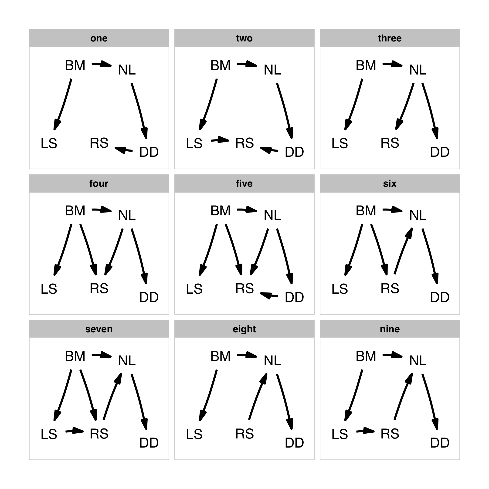
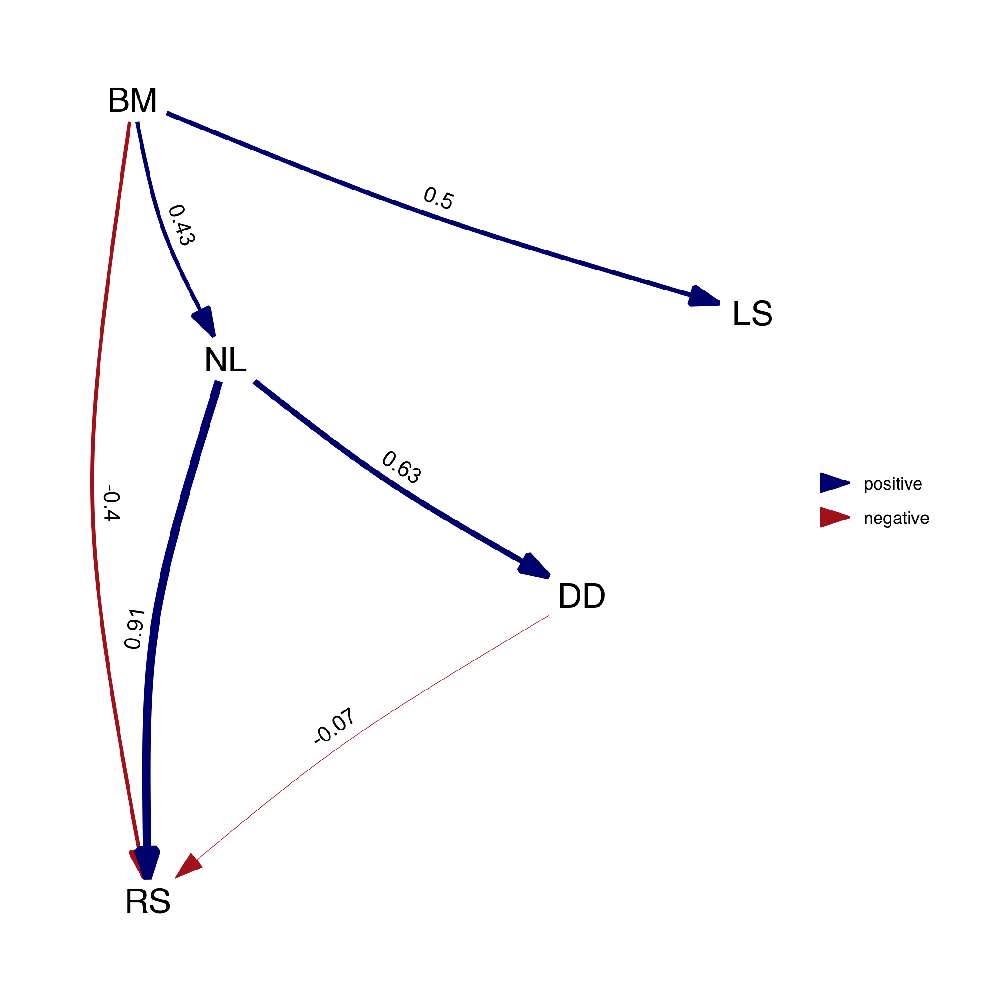

Use the phylopath package for an easy to use framework to perform phylogenetic path analysis (PPA).
PPA can be used to compare support for competing causal models of trait evolution, while taking shared ancestry into account. All you need is: 1. A clear set of models to test. 2. A data set of species with trait values. 3. A phylogeny of your species.
For a complete worked example, click “Get Started” above, or see the PeerJ paper.
This method was developed by Von Hardenberg and Gonzalez-Voyer. See citation() for info on correct citations.


phylopath has been used by >100 publications so far!